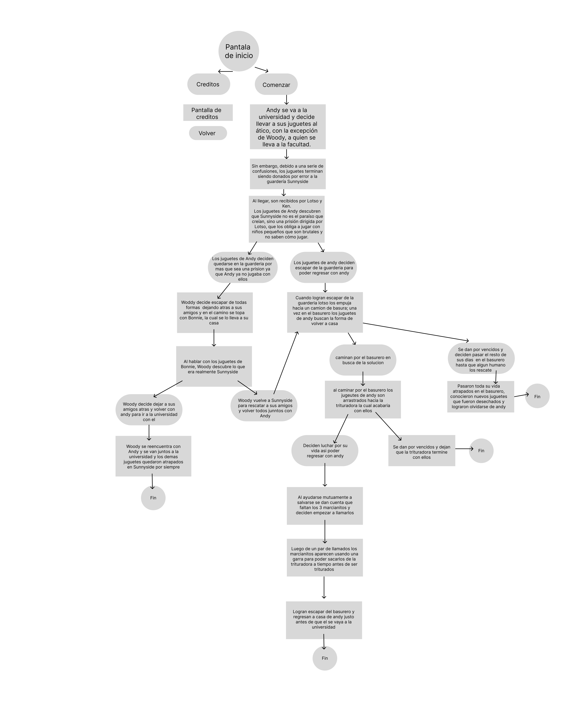

Toy Story 3 es la tercera película de la saga de animación Toy Story. La película fue distribuida en cines en formato analógico, digital y Disney Digital 3D.
es una película donde los juguetes de Andy son accidentalmente donados a una guardería en lugar de ser guardados en el ático. La trama sigue sus esfuerzos por escapar de la guardería y reunirse con Andy antes de que se vaya a la universidad.
para el proceso realice un diagrama de flujo en el cual detalle que iba a pasar en cada pantalla de la aventura grafia y que al momento de realizarla sea mas facil el proceso
